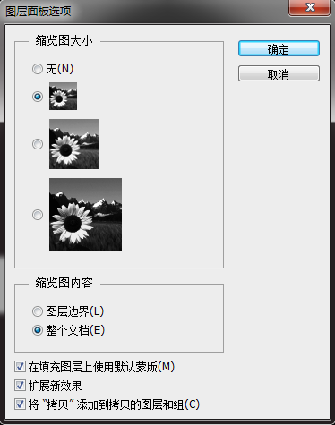

一、打开和保存
1.打开
1. 可以用Ctrl+O打开一个图片文件，也可以双击工作区打开，还可以直接拖拽图片文件到工作区，也是可以的。
2. 打开文件时，勾选下方图像序列后，可以打开在文件名上有次序的多个图像，如下图：
这种方法可以用来制作影视动画。具体的使用是，将每个图片的文件名按顺序命名，然后只要选中其中一个并勾选了图像序列后打开，就可以打开所有文件名
成顺序的图片。
2.保存
每个图片文档经过修改后，其标签末尾处就会标出一个“*”号，代表文档“已修改但未保存”，如图：
存储有三种格式：存储、存储为…、存储为Web所用格式。
存储：Ctrl+S，是以原命名原位置存储的，也就是说会替换掉原文件。
存储为…：Shift+Ctrl+S，可以选择以新命名、新位置、甚至新的格式来存储文件，不会修改原文件。
存储为Web所用格式：Alt+Shift+Ctrl+S，这种方式存储的图片更适用于网页。
3.文件格式:PSD、PSB、JPG、GIF
PSD：photoshop的标准文件格式，包含颜色、图层、通道、路径、动画等信息，是创作图像作品的原始文件，有PS的地方必有PSD文件。
PSB：一种大型文件格式，支持PSD所有功能，可以支持高或宽达到三十万像素的超大文件，目前是一种新格式，只能由CS或更高版本的photoshop打开。
JPG：最流行的图片文件格式， 文件体积小、可变压缩比、支持交错，被广泛用于互联网传输，是最常见的图片格式。
GIF：支持单色透明、动画，网页上的动态图、聊天表情用的大都是GIF图片，PS就可以用图像序列制作出GIF动画图片。
在存储PSD文件之前，可以将文件里的图层都隐藏掉，然后保存时候选择最大兼容。隐藏图层后存储的PSD格式文件大小会骤减，方便于网络传输（如果需要的
话，还可以弄成压缩文件，更小）。
另外，关于关闭，可以点击标签关闭，也可以使用Ctrl+W关闭当前标签，Alt+Ctrl+W关闭全部标签。
二、开始编辑前的准备
1.暂存盘
在首选项-性能里可以看到暂存盘，如图左下角：
PS在工作时会产生一个临时文件，因为软件在运算时会产生大量的数据，内存是装不下的，所以会暂时存在硬盘空间里。默认情况下是C盘，而C盘通常又是系
统盘，由于运行大型文件时，暂存文件会变得很大，严重占用系统盘空间，导致命令无法执行甚至系统崩溃，所以为了避免这种情况，要将暂存盘设置为其它
盘(可以设置多个)。
2. 历史纪录设置
在上图的右上角中是历史记录的相关设置，将历史记录状态的值改为更大的值，默认是20，你可以改为200，依喜好而定，它的作用是在你操作失误或想删除
掉从前的某一个操作时，让你可以选择将其去掉。
3.自动保存设置
当遇到电脑死机或程序未响应等情况时，造成没有保存的作品丢失，只能从头再来，但有了自动保存就不必担心这个啦。
在首选项-文件处理里，可以找到文件存储选项这个框，如图上方：
其中有自动存储回复信息时间间隔一项，可以自由设置，PS的自动存储是在后台运行，所以不会拖慢前台的处理速度，所以一般是设置为最短5分钟。
4.快捷键设置
有些命令没有快捷键，或快捷键太复杂，这时候可以通过自定义快捷键来解决问题。编辑-键盘快捷键（Ctrl+Alt+Shift+K）可进入自定义快捷键的窗口，
如下图：
设置快捷键后，也可以备份保存为一个组，这样就可以分不同组的快捷键，方便切换。在组选项的左边，第一个图标是保存，第二个图标是保存为......使用
的时候要小心。在不同电脑上也可以使用自己专用的快捷键组，只要找到快捷键组存储的位置将其复制拷到另一个电脑的photoshop的KeyboardShortcuts
文件夹下即可在键盘快捷键窗口里读取。
注：有些键盘同时最多只能识别三个键，因此有些达到四个键的快捷键组合会无法使用。
三、图层基础知识
图层的操作有两个部分，菜单栏的图层菜单和面板栏的图层面板（可以通过窗口菜单来打开或关闭，快捷键F7）。
1.认识图层面板
图层菜单和图层面板的命令有很多是相同的 ，图层面板如下图：
最左上方是标签，通过拖拽标签可以移动图层面板。标签下方的“类型”可以根据不同标准对图层进行筛选，类型右边的小图标是用来设置多个标准的。最右边的
小开关是用来打开或关闭这个功能的。
“类型”下方的一个下拉菜单是用来设置图层混合模式的，其右边是图层的不透明度。
再下方是“锁定”选项，一共提供了四种锁定方式，右边的“填充”可以对“图像像素填充度”进行调节。再下方就是图层列表了，所有的图层都在图层列表里，并
且它们是按上下叠加的顺序来排列的。
图层面板的最下方的一排按钮，依次是图层链接按钮、图层样式按钮、添加蒙板按钮、添加或调整图层按钮、创建新组按钮、创建新图层按钮、删除按钮。
另外，图层面板的右上角有一个菜单，里边也有很多相关的选项，有些和图层面板上的按钮功能一样。
2.了解图层概念
图层，简单来说就是图像的不同层面，就像画画时，是一层一层颜料往上涂的，而PS就是模仿画画时的这种方式，将图像分成很多层，分别进行操作，最后将
它们叠加在一起合成一个图像。可以用下面两个图来形象表示：
我们可以很方便的单独对一个图层进行修改，而不会影响到其它图层。
3.常见图层分类
图层分类有九种：普通、背景、智能、调整、填充、视频、矢量、3D、文字图层。
不同的图层包含不同的功能和属性，并且不同图层的图标也是不一样:
背景图层:在最下方。
智能图层：
普通图层：一块普通的带有图像的图层
矢量图层：也称为形状图层
填充图层：
调整图层：
文字图层：
3D图层：
视频图层：
4.图层基本操作
创建一个普通图层：有很多种方法，可以点击图层面板最下方的“创建新图层”按钮直接创建，如果点击的同时按下Alt键，会弹出一个对话框来设置图层的一些
基本属性，如下图所示：
颜色”不是图层上像素的颜色，而是指图层的标识颜色，如图：
是用一个颜色标记了该图层，使其易于在列表中识别、分类。模式指的是图层混合模式。不透明度就是不透明度。 另外，用菜单栏里的“图层”菜单的新建来创
建一个新图层，快捷键Shift+Ctrl+N。
图层的选择：按住Ctrl可以选择多个不连续图层，按住Shift键可以选择多个连续图层。
图层的隐藏：点击图层最前方的小眼睛图标（隐藏图标），就可以打开或者关闭这个图层，关闭即不显示图层像素，隐藏掉的图层数据在存为psd格式时传输不会
丢失，不过存为JPG等格式就会丢失。按住Alt键再点击隐藏图标，可以关闭除点击图层外的所有图层，再次点击可打开。
图层的移动：用鼠标拖拽就可以改变图层的上下次序，不过图层的次序是不能随便移动的，因为图层的上下次序代表的是它们的叠加顺序，不同的叠加次序展现
出的效果是大大不同的。Ctrl+【可以使当前图层向下移一层，相对应的是向上移一层，如果在其中加上Shift键，就可以直接移到最下方或最上方。
复制和删除：方法很多，比如图层菜单的“复制”或者右键图层空白部分都可以，复制时会弹出一个选框，如下图：
在目标框内的“文档”中如果选“新建”就可以使该图层复制在一个新的文档下，下方的名称框内所设置的就是该文档的名称。
有一种快捷的复制方法是，按住Alt键再拖拽，这时就是复制该图层到所拖拽的位置，这个操作也可以复制多个图层，只要选中多个图层即可。还有一种是选中
然后按Ctrl+J来复制，这样复制的图层会出现在原图层的上方。
删除图层很简单，可以选中图层然后点击最下方的“删除”按钮，也可以将图层拖拽到按钮上，还可以右击图层，在出现的菜单中也可以删除，不过最快捷的方式
是选中图层后按下键盘上的“Delete”键，就可以直接删除。
5.图层面板设置
这要在面板右上角的菜单-面板选项里设置，面板选项如图：

缩略图即每个图层最前方的图标。
“缩略图内容”框里有两个选项，如果选择图层边界，是根据图层内有内容的地方大小对缩略图的比例进行调节来显示；而选择整个文档，就是直接显示整个图
层。
最下边的那个框的意思是将复制的图层添加到“复制”组，具体的区别其实就只是复制后的图层命名不同，若不勾选，复制图层和原图层名字会相同。
6.图层分组
为了操作方便，可以对图层进行分组，方法就是点击图层面板下方的创建新组按钮就可以，然后将想要归到同一组的图层拖拽到组里即可。